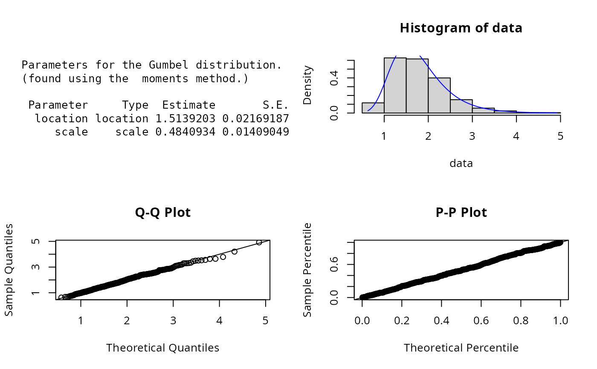
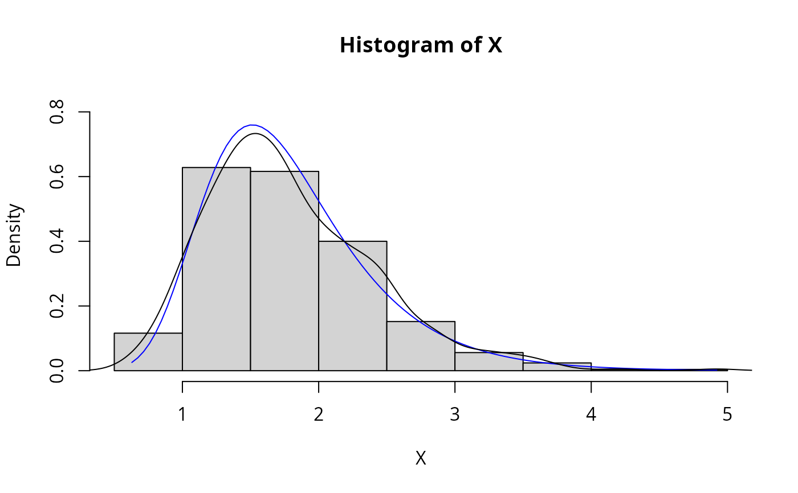
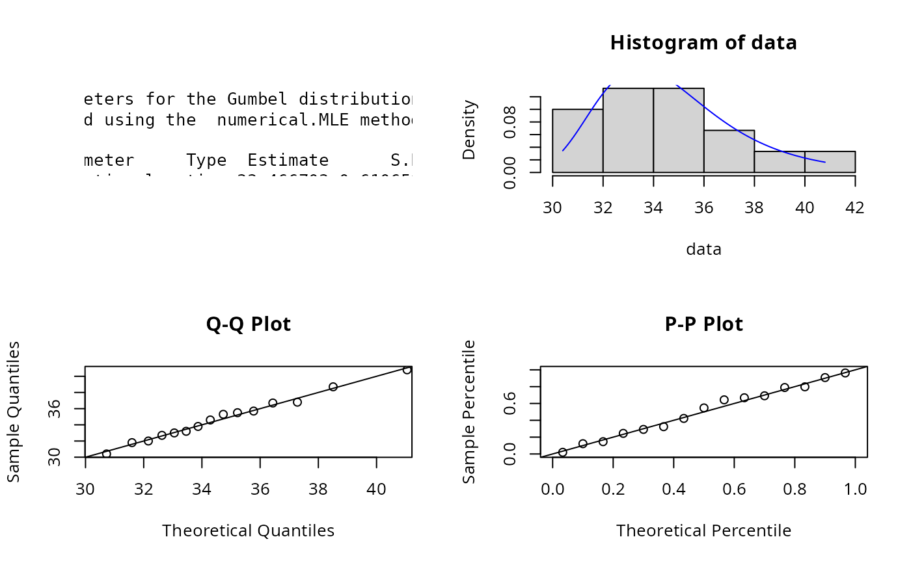

Gumbel.RdDensity, distribution, quantile, random number
generation, and parameter estimation functions for the Gumbel distribution with parameters
location and scale.
Parameter estimation can be based on a weighted or unweighted i.i.d sample and can be performed
analytically or numerically.
dGumbel(
x,
location = 0,
scale = 1,
params = list(location = 0, scale = 1),
...
)
pGumbel(
q,
location = 0,
scale = 1,
params = list(location = 0, scale = 1),
...
)
qGumbel(
p,
location = 0,
scale = 1,
params = list(location = 0, scale = 1),
...
)
rGumbel(
n,
location = 0,
scale = 1,
params = list(location = 0, scale = 1),
...
)
eGumbel(X, w, method = c("moments", "numerical.MLE"), ...)
lGumbel(
X,
w,
location = 0,
scale = 1,
params = list(location = 0, scale = 1),
logL = TRUE,
...
)A vector of quantiles.
Location parameter.
Scale parameter.
A list that includes all named parameters
Additional parameters.
A vector of probabilities.
Number of observations.
Sample observations.
An optional vector of sample weights.
Parameter estimation method.
logical if TRUE, lGumbel gives the log-likelihood, otherwise the likelihood is given.
dGumbel gives the density, pGumbel the distribution function, qGumbel the quantile function, rGumbel generates random deviates, and eGumbel estimate the distribution parameters. lGumbel provides the log-likelihood function.
The dGumbel(), pGumbel(), qGumbel(),and rGumbel() functions serve as wrappers of the
dgumbel, pgumbel, qgumbel, and rgumbel functions
in the VGAM package.They allow for the parameters to be declared not only as
individual numerical values, but also as a list so parameter estimation can be carried out.
The Gumbel distribution is a special case of the generalised extreme value (GEV) distribution and
has probability density function,
$$f(x) = exp{(-exp{-(x-\mu)/\sigma)}}$$
where \(\mu\) = location and \(\sigma\) = scale which has the constraint \(\sigma > 0\).
The analytical parameter estimations are as given by the Engineering Statistics Handbook
with corresponding standard errors given by Bury (p.273).
The log-likelihood function of the Gumbel distribution is given by
$$l(\mu, \sigma| x) = \sigma^{-n} exp(-\sum (x_{i}-\mu/\sigma) - \sum exp(-(x_{i}-\mu/\sigma))).$$
Shi (1995) provides the score function and Fishers information matrix.
Johnson, N. L., Kotz, S. and Balakrishnan, N. (1995) Continuous Univariate Distributions,
volume 2, chapter 22, Wiley, New York.
Engineering Statistics Handbook.
Bury, K. (1999) Statistical Distributions in Engineering, Chapter 15, pp.283-284,
Cambridge University Press.
Shi, D. (1995). Multivariate extreme value distribution and its Fisher information matrix. Acta Mathematicae
ExtDist for other standard distributions.
# Parameter estimation for a distribution with known shape parameters
X <- rGumbel(n = 500, location = 1.5, scale = 0.5)
est.par <- eGumbel(X, method="moments"); est.par
#>
#> Parameters for the Gumbel distribution.
#> (found using the moments method.)
#>
#> Parameter Type Estimate S.E.
#> location location 1.5058294 0.02099905
#> scale scale 0.4686319 0.01364046
#>
#>
plot(est.par)

# Extracting location and scale parameters
est.par[attributes(est.par)$par.type=="location"]
#> $location
#> [1] 1.505829
#>
est.par[attributes(est.par)$par.type=="scale"]
#> $scale
#> [1] 0.4686319
#>
# Fitted density curve and histogram
den.x <- seq(min(X),max(X),length=100)
den.y <- dGumbel(den.x, location = est.par$location, scale= est.par$scale)
hist(X, breaks=10, probability=TRUE, ylim = c(0,1.1*max(den.y)))
lines(den.x, den.y, col="blue")
lines(density(X))

# Parameter Estimation for a distribution with unknown shape parameters
# Example from; Bury(1999) pp.283-284, parameter estimates as given by Bury are location = 33.5
# and scale = 2.241
data <- c(32.7, 30.4, 31.8, 33.2, 33.8, 35.3, 34.6, 33, 32, 35.7, 35.5, 36.8, 40.8, 38.7, 36.7)
est.par <- eGumbel(X=data, method="numerical.MLE"); est.par
#>
#> Parameters for the Gumbel distribution.
#> (found using the numerical.MLE method.)
#>
#> Parameter Type Estimate S.E.
#> location location 33.466703 0.6106599
#> scale scale 2.240689 0.4495509
#>
#>
plot(est.par)

# log-likelihood
lGumbel(data, param = est.par)
#> [1] -35.58083
# Evaluating the precision of the parameter estimates by the Hessian matrix
H <- attributes(est.par)$nll.hessian
var <- solve(H)
se <- sqrt(diag(var)); se
#> location scale
#> 0.6106599 0.4495509